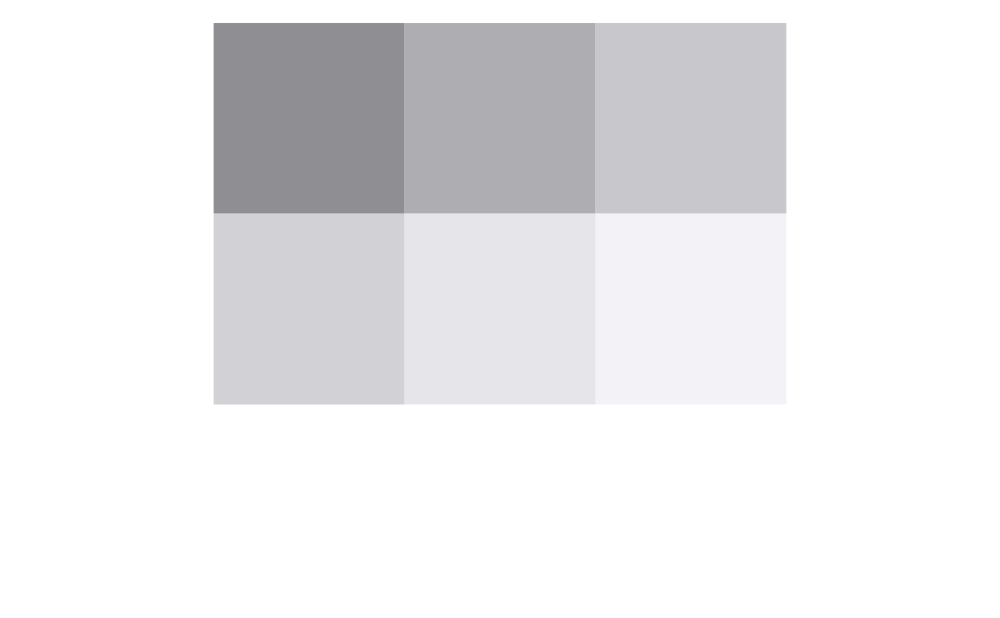

Set of color palettes based on iOS System Colors. General information about each palette can be found in the colors vignette.
ios_light_pal(order = "contrast", accessible = FALSE) ios_dark_pal(order = "contrast", accessible = FALSE) ios_gray_light_pal(accessible = FALSE) ios_gray_dark_pal(accessible = FALSE)
| order | Indicates the order of colors in the palette |
|---|---|
| accessible | Indicates whether the accessible set of colors should be used |
These functions are ideal for accessing the raw color values, and can be
used within functions where raw color values are needed, e.g., plot.
In order to use them with ggplot functions, you must utilize one of
the followings:
library(scales) scales::show_col( ios_light_pal(order = "default", accessible = FALSE)(9), borders = NA, labels = FALSE)scales::show_col( ios_light_pal(order = "default", accessible = TRUE)(9), borders = NA, labels = FALSE)scales::show_col( ios_light_pal(order = "contrast", accessible = FALSE)(9), borders = NA, labels = FALSE)scales::show_col( ios_light_pal(order = "contrast", accessible = TRUE)(9), borders = NA, labels = FALSE)library(scales) scales::show_col( ios_dark_pal(order = "default", accessible = FALSE)(9), borders = NA, labels = FALSE)scales::show_col( ios_dark_pal(order = "default", accessible = TRUE)(9), borders = NA, labels = FALSE)scales::show_col( ios_dark_pal(order = "contrast", accessible = FALSE)(9), borders = NA, labels = FALSE)scales::show_col( ios_dark_pal(order = "contrast", accessible = TRUE)(9), borders = NA, labels = FALSE)library(scales) scales::show_col( ios_gray_light_pal(accessible = FALSE)(6), borders = NA, labels = FALSE)library(scales) scales::show_col( ios_gray_dark_pal(accessible = FALSE)(6), borders = NA, labels = FALSE)